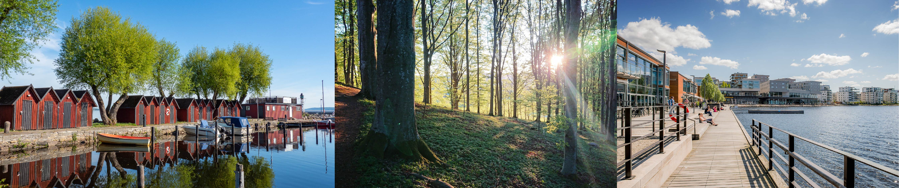
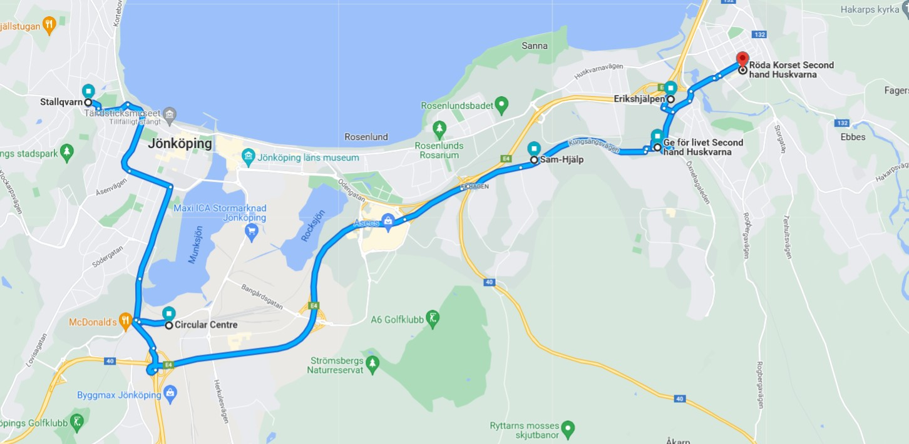

Jönköping is one of the oldest cities in Sweden, it has been around since at least 1284. The city is known for three things, it is “the city of matches”, tattarkravallerna and for having a large majority who are Christian. The city and areas close by go under the name “jesusbältet”. I can recommend taking a stroll down to “Tändsticksområdet”, where Jönköping still has preserved some older buildings and areas. There you can find the museum of matches in some parts of the old factory. The factory was founded in 1845 and is later known for producing the safety matches. Other Famous Things about Jönköping is the hockey team HV71, the candy producer Bubs and Husqvarna AB. The painter and illustrator John Bauer who made the characteristic paintings of trolls in the old, deep, dark nearby forests. You can see many of his paintings and sketches if you visit the county Museum in the center of Jönköping. Other famous people that originally from Jönköping is Dag Hammarsköld who was a diplomat and Secretary-General of the united Nation. Göran Kropp who was a great adventurer, documentary and record holder. Viktor Rydberg who was a writer, mostly known for the poem “Tomten” and “Gläns över sjö och strand”

this is my jönköping

Places to eat
Things to do
Places for Drinks
Fias secondhand trip

Stallqvarn
Circular Center
Sam-hjälp
Ge för livet
Erikshjälpen
Röda korset
Rumänienhjälpen